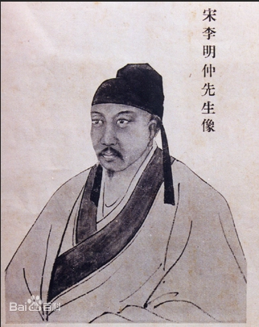

建筑名家
认识历代建筑巨匠，了解他们的设计理念、技术贡献与代表作品
李春
隋朝（约公元600年）
赵州桥总设计师，世界最早敞肩石拱桥的创造者，展现隋代高超的桥梁工程技术。
计成
明朝（1582—1642年）
明代造园家，著有《园冶》三卷，史载计成所造园林，包括汪士衡的“寤园”以及郑元勋的“影园”。

李诫
北宋（1035-1110年）
《营造法式》作者，中国古代最完整的建筑技术规范书编纂者。
蒯祥
明代（1397-1481年）
明代著名建筑师，紫禁城主要设计者之一，被誉为"蒯鲁班"。
雷发达
明末清初（1619-1693年）
"样式雷"家族创始人，清代宫廷建筑世家，作品包括圆明园、颐和园等。

喻皓
北宋（约960-1040年）
北宋著名木工建筑师，以建造开封开宝寺塔闻名，著有《木经》。